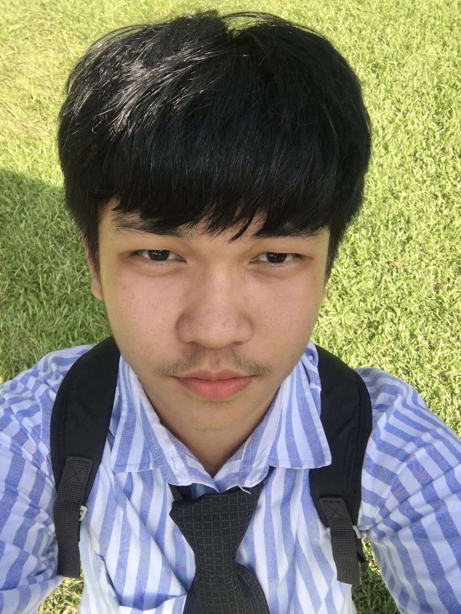
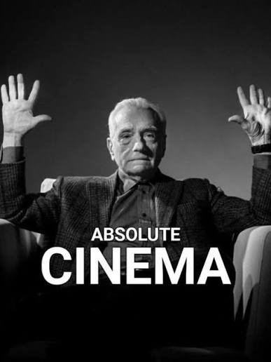
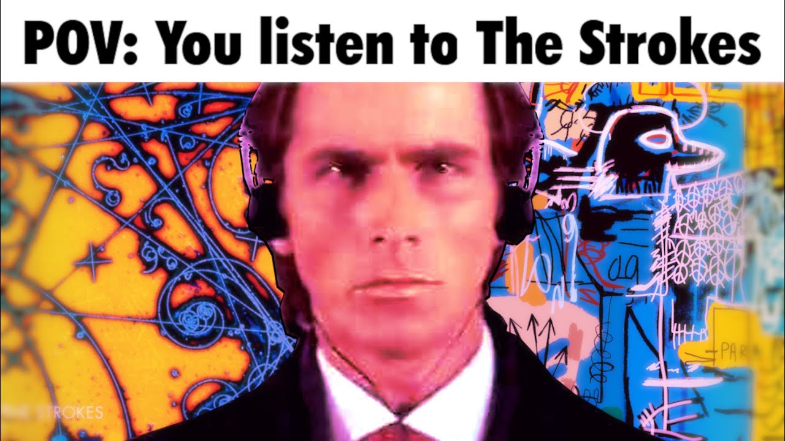
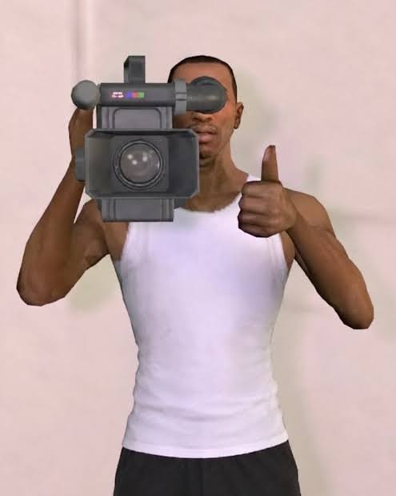
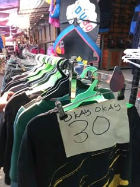
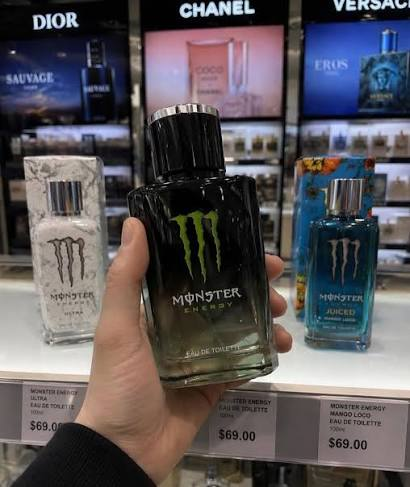

About Me

I am Kyle Luigie Montenegro, but my peers call me Igie. I am a multimedia artist currently working as a freelance video editor for local and international clients. I am also a student filmmaker creating short films and documentaries that aims to spark a change in the world.
I am currently pursuing a degree in Multimedia Studies at the University of the Philippines Open University. Frankly, studying solo online at my own pace and place was not my first choice. However, this setup allows me to pursue more opportunities that fulfill my creative hunger which also helps me financially.
Apart from storytelling through the video format, I also like to create and tell stories through different mediums. I love making and performing music with my friends on the side! I also love taking solo photowalks and capture pictures that speak to me.
Things I Love

Films

Music

Photography

Ukay-ukay

Perfumes
Passion Projects
Letters Never Sent - Small Songs for Big Hearts
Released: September 15, 2026
Letters Never Sent is a 4-piece band, that started as a school project, for the sake of jamming, and having the passion to play. This eventually lead to our debut E.P. "Small Songs for Big Hearts" which were recorded all the way back in the year 2024, to this year. The songs that are included are all the songs our band plays in shows, now it is finally released for everyone to listen to.
Bayo Grande Online
Released: November 15, 2024
Bayo Grande Online is a short film directed by me and created with the help of my friends and schoolmates. It follows a socially isolated gamer seeking intimacy that discovers a captivating player in his favorite virtual world. He’s then drawn into a whirlwind romance that feels too good to be true. It's a submission for our school-based annual horror film festival without any extracurricular grade involved so it is a pure passion project from me and my friends.
▷ Watch on YouTube | 👁 View on Letterboxd
Ang Lahat Ay
Released: August 17, 2024
Ang Lahat Ay is a solo experimental short film created by me during a sentimental moment in my life. The film was captured around Tomas Morato, Quezon City. Without any shots in mind, I let my instincts film anything I encountered that captures the message I want to put out.
▷ Watch on YouTube | 👁 View on Letterboxd